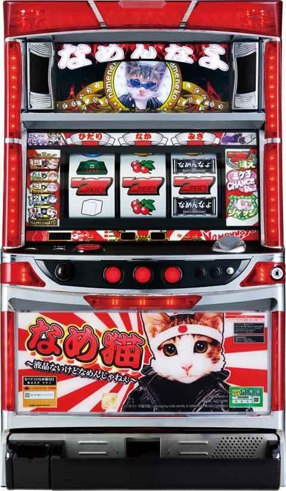

なめ猫～液晶ないけどなめんじゃねぇ～


狙い目
【リセット狙い】
不明
【ゲーム数天井狙い】
不明
【ゾーン狙い】
不明
【有利区間関連狙い】
不明
やめ時
引き戻しモードの32G＋αを消化してヤメ(暫定)。
その他
参考元
すろぱちくえすと
ツラヌキメソッド（無料期待値表） かめとうさぎのパチスロブログ
基本情報
- メーカー: ボーダー
- 機械割: 98.0% 〜 108.1%
- 導入開始日: 2025年08月04日（月）
- ゲーム性概要: ●液晶非搭載のAT機として『なめ猫』が登場 ●ボーナス（AT）の純増は2.9枚/G ●通常時はリプレイ連続・レア役・ゲーム数消化・CZ契機でATを目指す ●BIGは3回保障なので約600枚を獲得可能 ●金7揃いのジャックポットは期待枚数3000枚！


打ち方
打ち方・小役
打ち方（小役狙い）
［最初に狙う絵柄］ 左リール上段付近にBARを目押し。カバンが停止した場合は中＆右リールにカバンを目押ししよう。 その他の停止形は中＆右リールフリー打ちでOKだ。

［カバン停止時］ 中＆右リールにカバン（白7目安）を目押し。 カバン成立時は必ず演出が発生する。

［チェリーの強弱］

解析情報通常時
小役関連
リプレイの連続回数別報酬
| リプレイ連続回数 | 報酬 |
|---|---|
| 3連 | ミケ子チャンス（CZ） |
| 4連 | ボーナス濃厚 |
| 5連 | BIG濃厚 |
| 6連 | BIG＋1G連ストック |
リプレイの連続回数によって報酬が変化。3連でCZ、4連以上でボーナス濃厚になる。
リプレイ連続時は連動してランプの色が変化していく。

カバン確率
| 役 | 確率 |
|---|---|
| カバン | 約1/80 |
カバンは約50%でモードがアップ。上位モードほどボーナス当選時のBIG期待度がアップする。
モード
モード概要
通常時にはBIG当選率に関わる複数のモードがあり、REG回数やBIGの1G連スルー回数に応じてモードが変化。 カバン成立時は約50%でモードがアップする。
ミケ子チャンス（CZ）
CZ概要
おもにリプレイ3連契機で突入する7G間のCZ。リプレイはチャンス、リプレイ3連やレア役を引けばボーナスの大チャンスとなる。

ミケ子チャンス（CZ）性能
| 項目 | 内容 |
|---|---|
| 当選契機 | リプレイ3連など |
| 継続ゲーム数 | 7G |
| 平均ボーナス期待度 | 約35% |
| 消化中の抽選 | 成立役に応じてボーナス抽選 |
成立役ごとのボーナス（CZ成功）期待度
| 役 | 期待度 |
|---|---|
| ハズレ | 約5% |
| リプレイ | 約16% |
| 弱チェリー・カバン | 約50% |
| 強チェリー・リーチ目役 | 100% |
解析情報ボーナス時
ボーナス
BIG概要
初当り時は最低3連保障なので約600枚を獲得可能。消化中はBIG1G連が抽選される。

BIG性能
| 項目 | 内容 |
|---|---|
| 当選契機 | 通常時の抽選、1G連など |
| 継続ゲーム数 | ベルナビ50回消化まで |
| 純増 | 約2.9枚/G |
| 平均獲得枚数 | 約200枚 |
| 消化中の抽選 | BIG1G連 |
| その他 | 初回はBIG3回保障（約600枚獲得） |
REG概要
BIG中と同じく消化中はBIG1G連を抽選。単発でも終了後32G以内のボーナスは必ずBIGになる。

REG性能
| 項目 | 内容 |
|---|---|
| 当選契機 | 通常時の抽選など |
| 継続ゲーム数 | ベルナビ15回消化まで |
| 純増 | 約2.9枚/G |
| 平均獲得枚数 | 約60枚 |
| 消化中の抽選 | BIG1G連 |
| その他 | 終了後はチャンスモード移行 （32G間のボーナスはBIG濃厚） |
ジャックポット概要
BIG初当りの一部で当選する最強のトリガー。継続率約93%の1Gループと終了後の7Gループのコンボで、平均獲得枚数約3000枚という凄まじい性能となっている。

ジャックポット性能
| 項目 | 内容 |
|---|---|
| 当選契機 | BIG初当り時の一部 |
| 継続ゲーム数 | 基本的にBIGと同じ |
| 恩恵 | BIG1G連の93%ループおよび 終了後の7G連抽選 |
| 平均期待枚数 | 約3000枚 |
ボーナス中の1G連当選率
| 役 | 期待度 |
|---|---|
| 強チェリー | 約25% |
| リプレイ3連 | 約25% |
| リプレイ4連 | 100% |
ボーナス中はレア役やリプ連でBIG1G連を抽選する。
演出情報
通常時
コスプレSUランプ
ステップアップに応じて対応役が変化。SU5まで行ったり対応役が矛盾すればボーナス濃厚だ。

SUごとの対応役
| SU | 対応役 |
|---|---|
| SU1 | リプレイorベル （リプ連中はハズレもあり） |
| SU2 | リプレイor弱＆強チェリー （リプ連中はハズレもあり） |
| SU3 | リプレイorカバン |
| SU4 | カバンor強チェリー |
| SU5 | ボーナス濃厚 |